무선설비기사 (2003-08-10 기출문제)
1과목: 디지털 전자회로
1. 디지털 클럭 발진회로에서 출력에 tHigh = 4[㎲]이고, tlow = 6[㎲]인 구형파를 얻었을 때 듀티 사이클은?
- 20 %
- 40 %
- 60 %
- 80 %
(정답률: 알수없음)

2. 다음 TR의 접속방식 중 틀린 것은?
- 전압,전류이득이 모두 1보다 큰것은 CE접속방식이다.
- CB접속방식은 전압이득이 거의 1이다.
- CC접속방식은 입력저항이 크고 출력저항이 작다.
- CB접속방식은 입력저항이 작고 출력저항이 크다.
(정답률: 알수없음)
3. 35 Bit의 두 2진수를 병렬가산하기 위해서는 최소한 몇개의 반가산기와 전가산기가 필요한가?
- 반가산기: 1개, 전가산기: 34개
- 반가산기: 2개, 전가산기: 33개
- 전가산기: 1개, 반가산기: 34개
- 전가산기: 2개, 반가산기: 33개
(정답률: 알수없음)
4. 그림의 복수 에미터 트랜지스터가 이루는 논리게이트는?
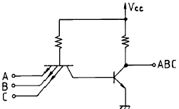
- TTL
- DTL
- DCTL
- RTL
(정답률: 알수없음)
5. 이상적인 연산증폭기의 조건으로서 옳지 않은 것은?
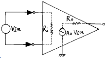
- 전압증폭도가 무한대
- 입력 임피이던스가 무한대
- 출력 임피이던스가 무한대
- 주파수 대역폭이 무한대
(정답률: 알수없음)
6. 다음 OP Amp 회로의 전압증폭도 Av 값은?
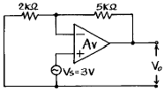
- 2.5
- 3.5
- 1.4
- 10.5
(정답률: 알수없음)
7. 차동 증폭기의 동상제거비(common mode rejection ratio)의 설명 중 틀린 것은?
- 동상입력의 이득에 대한 이상입력의 이득의 비를 말한다.
- 이 값이 클수록 차동 증폭기의 성능이 좋다.
- 차동 증폭기의 동상 입력에 대한 오차를 알수 있는 매개수가 된다.
- 회로의 안정도면에서는 이 값이 작을수록 유리하다.
(정답률: 알수없음)
8. 그림과 같은 직선 검파회로에서 diagonal clipping이 생기는 이유로서 옳은 것은? (단, ma는 변조지수, Ws는 변조신호의 각주파수)
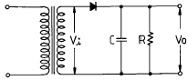
- 시정수 RC가 너무 작기 때문
- 시정수 RC가 너무 크기 때문
- RC ＞ 1/(maㆍ Ws)
- RC ≫ 1/(maㆍ Ws)
(정답률: 알수없음)
9. 포스터 실리(Foster-Seeley)회로의 사용 목적은?
- AM 복조
- FM 변조
- AM 변조
- FM 복조
(정답률: 알수없음)
10. 그림과 같은 슬라이스(slice) 회로의 출력파형은? (단, 입력은 E sin ω t[V]이다.)
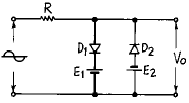
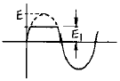
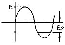
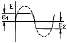
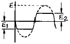
(정답률: 알수없음)
11. 그림의 논리회로를 간소화 하였을 때 출력 X는?
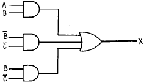
- X =
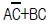
- X = A+B
- X =
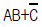
- X = AB
(정답률: 알수없음)
12. 논리식
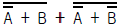
을 간단히 하면?- A
- B
- AB
- A+B
(정답률: 알수없음)
13. 변환하고자 하는 입력전압은 0[V]에서 15[V]일 때, 몇 BIT의 A/D변환기를 사용해야하는 것이 가장 좋은가? (단, 분해능은 3.66[mV] 이다.)
- 10 BIT
- 12 BIT
- 14 BIT
- 16 BIT
(정답률: 알수없음)
14. Exclusive-OR 게이트의 입력 A, B, C에 대한 출력 진리값 중 틀린 것은? (단, F = A ⊕ B ⊕ C )
- 0 = 0 ⊕ 0 ⊕ 0
- 1 = 0 ⊕ 0 ⊕ 1
- 1 = 0 ⊕ 1 ⊕ 1
- 1 = 1 ⊕ 1 ⊕ 1
(정답률: 알수없음)
15. 그림의 정전압회로에서 V가 25∼28[V]의 범위에서 변동한다. zener diode 전류ID의 변화는? (단, RL=1[kΩ ], V=28[V], VL=20[V]이다.)
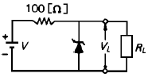
- 30∼50[mA]
- 30∼60[mA]
- 10∼50[mA]
- 10∼60[mA]
(정답률: 알수없음)
16. 그림과 같은 발진회로의 발진 주파수는?
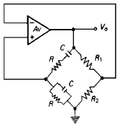
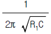
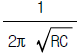
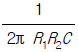
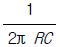
(정답률: 알수없음)
17. 10진수의 4에 해당하는 4비트 그레이 코드(gray code)는 다음 중 어느 것인가?
- 0100
- 0111
- 1000
- 0110
(정답률: 알수없음)
18. 증폭기의 전압이득이 증가할 때 대역폭은?
- 영향을 받지 않는다.
- 증가한다.
- 감소한다.
- 일그러진다.
(정답률: 알수없음)
19. 주파수 변조에서 S/N 비를 개선하기 위한 방법으로 적당치 않은 것은?
- 신호파의 진폭을 크게 한다.
- 변조지수 mf를 크게 한다.
- 프리엠파시스를 사용한다.
- 주파수 대역폭을 크게 한다.
(정답률: 알수없음)
20. 아날로그-디지탈 변환에 유효하게 사용되는 코드는?
- BCD 코드
- 3초과 코드
- 그레이 코드
- 링 카운터 코드
(정답률: 알수없음)
2과목: 무선통신 기기
21. 다음은 Ring 변조기의 동작원리를 설명한 것이다. 잘못 표현된 것은?
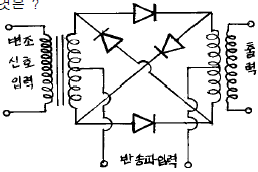
- 변조기 출력에는 반송파가 제거되고 상,하측대파만 나온다.
- 반송파가 인가되지 않으면 변조 신호만 나타난다.
- Ring변조기를 복조기로도 사용할 수 있다.
- 반송파만 인가되면 출력에는 아무것도 나타나지 않는다.
(정답률: 알수없음)
22. AM 방송국은 보통 540KHz에서 1600KHz의 주파수범위를 사용하고 있으며 대역폭은 10KHz이다. AM 라디오 수신기의 RF필터의 최소 대역폭은 얼마인가?
- 1600KHz
- 540KHz
- 2140KHz
- 10KHz
(정답률: 알수없음)
23. 다음중 통신위성체의 TT&C 시스템에서 행하는 일과 거리가 먼 것은?
- Telemetry 정보의 수집
- 위성관제소의 명령을 수행
- 주파수의 변환
- Telemetry 정보의 송신
(정답률: 알수없음)
24. 스펙트럼 분석기로 각종 발진기를 측정하였을 때 가장 이상적인 발진기의 상태는?
- 거의 균일한 크기의 스펙트럼이 많이 나타났다.
- 중앙의 스펙트럼이 유난히 작고 주위의 스펙트럼이 매우 크다.
- 중앙의 스펙트럼이 매우 크며 주위에 매우 미소한 스펙트럼 분포
- 전체적으로 대칭상태의 많은 스펙트럼의 분포
(정답률: 알수없음)
25. PM을 등가 FM으로 만들기 위하여 사용되는 회로는?
- pre-emphasis회로
- pre-distorter회로
- de-emphasis회로
- IDC회로
(정답률: 알수없음)
26. SAW(Surface Acoustic Wave)필터의 장점이 아닌 것은?
- 우수한 주파수 특성과 위상특성
- 저 삽입손실
- 고신뢰성
- 우수한 LPF 특성
(정답률: 알수없음)
27. 아래의 회로에서 출력전압의 변동분을 분담하여 보상한 소자는?
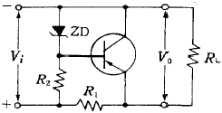
- R1
- R2
- RL
- ZD
(정답률: 알수없음)
28. 초단파대 범위의 FM송신기 전력측정에 가장 적당한 것은?
- CM형 방향성 결합기에 의한 방법
- 수부하에 의한 방법
- 열방사계에 의한 방법
- 전구의 조도에 의한 방법
(정답률: 알수없음)
29. 아래의 회로는 포스터-실리(Foster-Seeley) 검파기이다. 회로의 구성상태 중 잘못 설명한 것은?
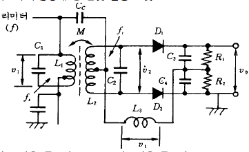
- 1차측 동조회로 L1, C1 및 2차측 동조회로 L2,C2는 FM파의 중심주파수에 동조되어야 함.
- 1차측 동조회로의 코일 L1과 2차측 동조회로 L2는 유도결합 되어 있으며, 결합계수는 크지 않음.
- 무선주파 쵸크 L3는 고주파에서 개방, 신호주파수에서는 단락상태가 될 수 있도록 선정함.
- 1차측 전압 V1과 2차측 전압 V2는 FM파의 중심주파수 fi에서 180[도]의 위상차가 되도록 함.
(정답률: 알수없음)
30. 무선 통신용 송신기에서 입력신호를 변조(Modulation)하는 가장 타당한 이유는?
- 전송매개체와 신호를 정합(Matching)시키기 위해
- 주파수를 높이기 위해
- 수신기에서 받는 신호를 변환할 필요가 없기 때문에
- 실제 구현시 회로가 간단하기 때문에
(정답률: 알수없음)
31. CDMA통신에 대한 설명중 가장 옳은 것은?
- 이 방식은 동기가 필요없이 코드만 식별되면 통신이 된다.
- CDMA에서는 캐리어 주파수분할이 필요없다.
- PN코드의 동기만 맞으면 통신이 된다.
- 각 가입자별로 고유의 PN 코드를 할당하는 방식이다.
(정답률: 알수없음)
32. 무선송신기의 송신주파수 변동을 줄이기 위한 대책이 아닌 것은?
- 발진기와 출력단 사이에 완충증폭기를 넣는다.
- 발진기와 코일과 콘덴서의 온도계수를 상쇄하도록 부품을 선택한다.
- 전원의 안정도를 높인다.
- 발진기의 동조회로에 Q가 낮은 부품을 선택한다.
(정답률: 알수없음)
33. 디지털 무선통신방식에서 클럭추출의 간이화 및 스펙트럼의 평활화를 위해 필요한 기능은?
- 스크램블, 디스크램블(Scramble, Descramble)
- 패턴지터(Systematic Jitter)
- 에러정정기(FEC)
- 위상동기 발진기(PLO)
(정답률: 알수없음)
34. 그림은 전원 정류회로의 리플(ripple)함유율을 측정하는 회로이다. 저항 R을 조정하여 전류계의 지시가 정격전류가 되었을 때 전압계 V1과 V2의 지시값이 120[V] 및 6[V]라면 리플 함유율은 얼마인가?
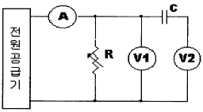
- 5%
- 2%
- 10%
- 8%
(정답률: 알수없음)
35. DBS(Direct Broadcasting Satellite)에 대한 설명중 틀린것은?
- 방송 위성은 정지궤도 위성을 이용한다.
- 한 개의 위성으로 한반도 전체에 서비스할 수 있다.
- 사용 주파수 대역은 V/UHF 대역을 사용한다.
- 가정에서는 소형 파라보라 안테나를 사용한다.
(정답률: 알수없음)
36. 레이더에서 발사된 펄스 전파가 8[㎲]후에 목표물에서 반사되어 되돌아 왔다. 목표물까지의 거리는?
- 2400[m]
- 1200[m]
- 800[m]
- 600[m]
(정답률: 알수없음)
37. 기전력 2V, 내부저항 0.1Ω 인 전지가 100개 있다. 이 전지를 전부사용하여 2.5Ω 의 부하저항에 최대 전류를 흘리기 위한 전지의 접속 방법은?
- 100 개의 전지를 직렬로 접속
- 50 개의 전지를 직렬로 접속한 후 2 개조를 병렬로 접속
- 25 개의 전지를 직렬로 접속한 후 4 개조를 병렬로 접속
- 20 개의 전지를 직렬로 접속한 후 5 개조를 병렬로 접속
(정답률: 알수없음)
38. 스퓨리어스(Spurious)복사의 방지방법이 아닌 것은?
- 전력 증폭단의 여진전압을 높인다.
- 국부발진기의 출력에 포함된 고조파를 적게한다.
- 동조회로의 Q를 높게 한다.
- 급전선에 트랩을 설치한다.
(정답률: 알수없음)
39. 슈퍼 헤테로다인 수신기의 중간 주파수(IF)를 선정할 때 고려되는 사항으로 틀린 것은?
- 안정도 : 중간주파수(IF)가 낮은 것이 좋다.
- 지연특성 : 중간주파수(IF)가 높을수록 좋다.
- 근접 주파수 선택도 : 중간주파수(IF)가 높을수록 좋다.
- 영상 혼신 : 중간주파수(IF)가 높을수록 좋다.
(정답률: 알수없음)
40. 다음중 통신위성의 원리와 거리가 먼 것은?
- 만유인력법칙
- 지구의 자전주기
- 지구의 공전주기
- 궤도운동
(정답률: 알수없음)
3과목: 안테나 공학
41. 다음중 무손실 선로에서 얻어지는 조건은?
- R = 0 , G = ∞
- R = ∞ , G = 0
- R = ∞ , G = ∞
- R = 0 , G = 0
(정답률: 알수없음)
42. HF대를 이용한 장거리 통신에 가장 적합한 전파 방식은?
- 회절파
- 지상파
- 대류전파
- 전리층파
(정답률: 알수없음)
43. 다음 동조급전선에 관한 설명중 적당하지 않은 것은?
- 급전선에는 정재파가 있다.
- 송신기와의 결합은 LC공진회로를 사용 할 수 있다.
- 전송효율이 가장 좋고 송신기와의 결합이 간단하다.
- 선로의 길이에 제약을 받는다.
(정답률: 알수없음)
44. 다음 안테나 중에서 가장 광대역 특성을 갖는 것은 어느것인가?
- 폴디드 다이폴 안테나(folded dipole antenna)
- 혼 안테나(horn antenna)
- 롬빅 안테나(rhombic antenna)
- 대수주기 안테나(log periodic antenna)
(정답률: 알수없음)
45. 대류권 산란파의 특징 중 잘못된 것은?
- 적당한 주파수파수는 200[MHz]∼3,000[MHz]이다.
- 아주 첨예한 지향특성을 갖는 안테나가 필요하다.
- 지리적 조건의 제한을 받지 않는다.
- 다이버시티방식에 의해서 실용화가 가능하다.
(정답률: 알수없음)
46. 지상 높이가 같은 역 L형 안테나와 수직 안테나를 비교하면 역 L형 안테나 쪽이 실효고가 높은데 그 이유는?
- 공진이 날카롭기 때문이다.
- 접지저항이 작기 때문이다.
- 상부의 정전용량이 증가하기 때문이다.
- 도체저항이 작기 때문이다.
(정답률: 알수없음)
47. 다음 중 공전(空電)의 특징이 아닌 것은?
- 주로 초단파 통신에 방해를 주며 200[GHz]이상에서는 문제가 되지 않는다.
- 장파대의 공전은 겨울보다 여름에 자주 나타나며 강도도 크다.
- 공전은 적도 부근에서 가장 격렬히 발생한다.
- 단파대에서는 한밤중 전후에 최대이고 정오경에 최소가 된다.
(정답률: 알수없음)
48. 다음 안테나 중에서 자기상사형이 아닌 것은?
- 쌍원추형(biconical) 안테나
- 대수주기형(log periodic) 안테나
- 스파이럴 슬롯(spiral slot) 안테나
- 원통 슬롯(slot) 안테나
(정답률: 알수없음)
49. 마이크로웨이브(microwave) 통신의 장점이 아닌 것은?
- 광대역 통신이 가능하며 사용주파수의 범위가 넓다.
- 외부잡음의 영향이 적고 PTP(point to point)통신이 가능하다.
- 전리층을 통과하여 전파하며 중계기 없이도 원거리 통신이 가능하다.
- 예민한 지향성과 고이득을 가진 안테나를 사용하여 간섭을 적게 할 수 있다.
(정답률: 알수없음)
50. 전파의 속도는 매질의 다음 어느 량에 따라서 변화되는가?
- 점도와 밀도
- 밀도와 도전율
- 도전율과 유전율
- 유전율과 투자율
(정답률: 알수없음)
51. 파라볼라 안테나의 절대이득을 계산하는 식은? (η : 개구 효율, D : 파라볼라의 직경, λ : 파장)
- η π 2D/λ
- η (π D/λ )2
- η (λ /π D)2
- η λ /(π D)2
(정답률: 알수없음)
52. 3개의 도체를 사용하여 3단의 폴디드(folded) 안테나를 구성할 경우 복사저항은 얼마인가?
- 73[Ω]
- 110[Ω]
- 292[Ω]
- 658[Ω]
(정답률: 알수없음)
53. 주파수 30[㎒],전계강도 40[㎷/m]인 전파를 λ /4 수직 접지 안테나로 수신했을 때 안테나에 유기되는 기전력은? (단, 대지는 완전도체로 가정한다.)
- 0.318[㎷]
- 6.36[㎷]
- 31.8[㎷]
- 63.6[㎷]
(정답률: 알수없음)
54.
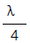
수직 접지 안테나의 길이(ℓ)가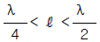
일 때 무엇을 삽입하여 안테나를 공진시키는가?- 연장 코일(coil)
- 단축콘덴서 (condenser)
- 안테나는 분포정수 회로이므로 항상 공진되어 있다.
- 저항과 코일(coil)을 직렬로 연결한다.
(정답률: 알수없음)
55. 안테나를 설계할 때 반사기를 붙이는 이유는?
- 임피던스 정합을 위해
- 광대역화를 위해
- 접지저항을 적게 하기 위해
- 전파를 한 방향으로 보내기 위해
(정답률: 알수없음)
56. 반파장 다이폴 안테나의 지향성 계수는?
- sin(π sinθ)/cosθ
- cos(
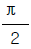
cosθ)/sinθ - cos(π cosθ)/sinθ
- sin(π cosθ)/sinθ
(정답률: 알수없음)
57. 대기의 작은 기단군(氣團群), 난류 등에 의해 초가시거리 전파에서 가장 심하게 수반하는 페이딩(fading)은?
- 감쇠형
- K 형
- 신틸레이션(scintillation)형
- 산란파형
(정답률: 알수없음)
58. 동축급전선을 개방하고 임피던스를 측정하였을 때 100[Ω]이고, 단락 했을 때의 임피던스가 25[Ω]라면 이 급전선의 특성임피던스는 얼마인가?
- 100[Ω]
- 75[Ω]
- 50[Ω]
- 25[Ω]
(정답률: 알수없음)
59. 도파관 창(Waveguide Window)은 무슨 기능을 하는가?
- 도파관에 이물질이 들어가지 않도록 한다.
- 도파관의 임피던스를 변화시킨다.
- 도파관내의 반사파를 감쇠시킨다.
- 도파관의 비틀림을 용이하게 한다.
(정답률: 알수없음)
60. 접지 안테나의 복사저항이 36.6[Ω]이고 접지저항이 4.4[Ω]이며 그외의 손실저항이 10[Ω]이다. 이 안테나의 효율은?
- 63[%]
- 72[%]
- 78[%]
- 89[%]
(정답률: 알수없음)
4과목: 무선통신 시스템
61. 마이크로 웨이브 링크에서 전방향 송신빔을 간섭으로부터 격리 또는 보호하기 위해 통상 중계기 안테나의 전후방비(Front-to-back Ratio)는 다음 어느 것이 적합한가?
- 10[dB] 이하
- 10[dB]~20[dB]
- 20[dB]~30[dB]
- 30[dB] 이상
(정답률: 알수없음)
62. CDMA 이동통신 시스템의 기본 구성 중 이동국에서 발신한 무선신호를 무선채널로 수신하는 기능을 하는 것은?
- 이동 통신 교환국(MSC)
- 기지국(BS)
- 운용 보존국(OMC)
- 방문 위치 등록 레지스터(VLR)
(정답률: 알수없음)
63. 열잡음(thermal noise)에 관해서 k를 볼츠만 상수, T를 절대온도, R을 저항치, B를 대역폭이라고 하면 평균열잡 음전압은?
- 2kTRB
- 2kTRB2
- √ 4kTRB
- 4kTRB 2
(정답률: 알수없음)
64. 위성통신방식에서 통신가능한 지구상의 통신거리(L)은 어떻게 표시되는가? (단, R : 지구반경, h : 위성의 고도, θ : 안테나의 최저 양각, β : 커버리지의 중심각)
- L = R cos(θ +β )/cosθ
- L = R cos(β +θ )/cosβ
- L = (R+h)sinβ /cosθ
- L = (R+h)sinθ /cosβ
(정답률: 알수없음)
65. 다음은 어떤 확산대역통신 방식을 설명한 것인가?
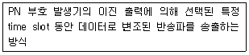
- DS
- FH
- TH
- CM
(정답률: 알수없음)
66. 비검파의 출력전압은 포스터실리(foster - seeley) 검파에 비해 어느 정도인가?
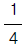
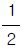
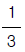
- 같다.
(정답률: 알수없음)
67. 위성통신에서 정지위성궤도에 대한 설명 중 틀린 것은?
- 지구적도상공 약 35,786[㎞]에 존재하는 궤도이다.
- 궤도 1주기는 약 24시간이다.
- 하나의 위성은 궤도상에서 지구표면의 약 60% 시각성을 갖는다.
- 지구의 각 속도와 동일한 각 속도로 지구를 회전하는 궤도이다.
(정답률: 알수없음)
68. 위성지구국의 고출력 송신기(HPA)로 쓰이는 TWT의 정상운용에 관한 설명 중 적절하지 않은 것은?
- Collector 전류가 많을수록 출력도 높게 될 수 있다.
- Anode 전위가 커지면 이득을 높이는데 도움이 된다.
- Body 전류가 많아질수록 출력이 낮아질 수 있다.
- TWT의 내부에 기체가 발생하면 Beam 상승으로 출력이 증가된다.
(정답률: 알수없음)
69. 두 지점간에 M/W 전파경로를 구성할 때 경로상에서 반사파가 발생할 경우 이에 대한 대책중 가장 적합하지 못한 것은?
- 반사점 부근의 지역이 울퉁불퉁한 지점이 되도록 전파경로를 택한다.
- 부득이 수면상을 통해야 할 경우 지형을 이용하여 차폐봉을 만들어 반사파를 방지한다.
- 수평 다이버시티 수신을 행하여 반사파를 방지한다.
- 수직 다이버시티 수신을 행하여 반사파를 방지한다.
(정답률: 알수없음)
70. 이동전화 시스템에서 핸드 오버를 결정하는 직접적인 요소가 아닌 것은?
- Moving velocity
- C/I(Carrier to Interference ratio)
- BER
- RSSI(Received Signal Strength Indicator)
(정답률: 알수없음)
71. 섹터간 전파가 겹치는 지역에서 통화가 이루어지면 한 기지국의 두 섹터를 통해 통화가 이루어지게 되는데 이러한 핸드오프는?
- 하드 핸드오프(hard handoff)
- 소프트 핸드오프(soft handoff)
- 소프터 핸드오프(softer handoff)
- 주파수간 하드 핸드오프
(정답률: 알수없음)
72. 우리나라의 CDMA방식 셀룰러 이동전화에서 섹터당 채널수는?
- 20채널
- 30채널
- 40채널
- 60채널
(정답률: 알수없음)
73. 다음 중 무선통신의 특징이 아닌 것은?
- 잡음이 거의 없이 통신이 가능하다.
- 무한한 공간을 공통의 전송로로써 사용한다.
- 수신점에는 목적외의 전자파가 많이 포함되어 있다.
- 전자파의 대역폭 중에서 어느 정도의 대역폭을 필요로 한다.
(정답률: 알수없음)
74. DARC와 관계가 먼 것은?
- Data Radio Channel의 약어이다.
- 이동체를 위한 고속 FM방송시스템이다.
- 기상정보, 교통정보, 페이징서비스 등이 가능하다.
- DGPS를 이용한 위치정보서비스는 불가능하다.
(정답률: 알수없음)
75. 무선통신의 주파수특성에 관한 설명으로 가장 적합한 것은?
- AM 방송통신에서 두개의 방송국으로 부터 전파된 동일주파수가 중첩되는 지역에서는 수신이 잘된다.
- FM 방송에서 수신감도를 향상시키기 위해서는 방송주파수 대역을 좁게 하여야 한다.
- 이동전화에서의 주파수 재사용은 동일주파수가 중첩되는 지역이 없도록 하여야 한다.
- 이동전화에서 사용하는 셀구성은 지형적 특성을 고려하여 동일기지국에 동일주파수 사용이 많을수록 효과적이다.
(정답률: 알수없음)
76. 자유공간의 고유 임피이던스값 중에 잘못된 것은?
- 377[Ω]
- 120π [Ω]
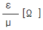
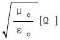
(정답률: 알수없음)
77. 이동위성통신 시스템(Satellite Mobile System)에 해당되지 않는 것은?
- Iridium
- Globalstar
- Odyssey
- DECT
(정답률: 알수없음)
78. 통신신호레벨이 8[dBm]인 출력을 60CH의 각 회선에 등분 하여 송출하면 1회선당 몇[㏈m]의 신호레벨이 되는가?
- 1.77[㏈m]
- 0.97[㏈m]
- -17.78[㏈m]
- -9.78[㏈m]
(정답률: 알수없음)
79. AM 송신기의 고조파 왜곡을 감소시키는 방법으로 가장 적당한 것은?
- Pre-distorter 사용
- Sguelch 회로 사용
- Limiter 회로 사용
- 부궤환 방식 채용
(정답률: 알수없음)
80. 무선중계소에서 사용하는 무선장비 중 페이드마진(fade margin)이 클수록 장비의 안정도는 어떻게 변화하는가?
- 변화없다 .
- 떨어진다.
- 향상된다 .
- 무관하다.
(정답률: 알수없음)
5과목: 전자계산기 일반 및 무선설비기준
81. 다음의 송신설비 중 규격전력(PR)으로 표시하지 아니하는 것은?
- 비상위치지시용 무선표지설비
- 라디오 부이의 송신설비
- 아마추어국의 송신설비
- 실험국의 송신설비
(정답률: 알수없음)
82. 무선설비의 안전시설기준에 의한 고압전기는?
- 600볼트를 초과하는 고주파 및 교류전압과 750볼트를 초과하는 직류전압
- 450볼트를 초과하는 고주파 및 교류전압과 700볼트를 초과하는 직류전압
- 300볼트를 초과하는 고주파 및 교류전압과 500볼트를 초과하는 직류전압
- 220볼트를 초과하는 고주파 및 교류전압과 750볼트를 초과하는 직류전압
(정답률: 알수없음)
83. 주기억장치의 액세스시간을 등가적으로 감소시키기 위해서 주기억장치와는 별도로 설치한 소용량의 고속기억장치는?
- 가상기억장치
- 캐시기억장치
- 연상기억장치
- 모듈기억장치
(정답률: 알수없음)
84. 다음 중 음수를 표현하는데 사용하는 방법이 아닌 것은?
- 부호와 절대값
- 고정소수점
- 부호와 1의 보수
- 부호와 2의 보수
(정답률: 알수없음)
85. 다음 중에서 순서도(flowchart)의 역할이 아닌 것은?
- 프로그램 코딩의 기초자료가 된다.
- 프로그램의 수정이 쉽다.
- 프로그램의 처리과정을 한눈에 보기 쉽다.
- 프로그램 작성자만 쉽게 알 수 있도록 한다.
(정답률: 알수없음)
86. 정보를 나타내는 부호에 여분으로 한 자리를 추가하여 사용하는 검출용 비트는?
- 패리티비트(parity bit)
- 워드패리트(word parity)
- 체크비트(check bit)
- 에러비트(error bit)
(정답률: 알수없음)
87. 이동헤드디스크(moving head disk) 장치의 데이터 전송 연산시간 중에서 가장 큰 비중을 차지하는 것은?
- 탐구시간(seek time)
- 회전지연시간(latency time)
- 전송시간(transmission time)
- 신호전달시간(signal transfer time)
(정답률: 알수없음)
88. 다음 중 공중선계의 충족조건에 해당되지 않는 것은?
- 정합이 충분할 것
- 이득이 높은 공중선일 것
- 공중선은 능률이 좋을 것
- 사방복사의 지향성을 얻을 수 있을 것
(정답률: 알수없음)
89. 레이저 프린터(Laser printer)의 특징에 대한 설명으로 적당하지 않은 것은?
- 높은 인쇄속도를 갖는다.
- 인쇄 해상도가 높다.
- 현상을 위해 토너가 필요하다.
- 자기막을 이용하여 이미지를 생성한다.
(정답률: 알수없음)
90. 다음 중 자기 보수 코드(Self complement code)에 해당되는 것은?
- 8-4-2-1 code(BCD)
- 6-3-1-1 code
- Excess-3 code
- Gray code
(정답률: 알수없음)
91. 다음 중 정보통신기기 인증규칙에 적용되지 않는 것은?
- 형식승인을 얻어야 할 경우
- 전자파적합등록을 하여야 할 경우
- 형식검정을 받아야 할 경우
- 전자파흡수율 측정을 하여야 할 경우
(정답률: 알수없음)
92. 다음중 스퓨리어스발사 기준을 적용 받지 않는 경우는?
- 시험발사를 행하는 비상위치지시용 무선표지설비
- 정상동작으로 운용하는 이동전화 기지국
- 도서지방에 설치하는 마이크로웨이브 고정국
- 조난신호를 중계하는 아마추어 무선국
(정답률: 알수없음)
93. CPU에서 4개의 사이클이 반복하는 동작 중에 발생하지 않는 사이클은?
- 실행 사이클
- 브랜치 사이클
- 인터럽트 사이클
- 페치 사이클
(정답률: 알수없음)
94. 다음 중 전파형식별 공중선전력의 표시로서 잘못 연결된 것은?
- A1A-PX
- J3E-PX
- R3E-PX
- A3E-PX
(정답률: 알수없음)
95. 교착 상태(Deadlock)의 발생조건이 아닌 것은?
- 보유와 대기조건
- 상호 배제 조건
- 상태 전위 조건
- 비중단 조건
(정답률: 알수없음)
96. 주파수할당에 관한 용어의 정의가 옳게 설명된 것은?
- 특정한 주파수를 이용할 수 있는 권리를 특정인에게 부여 하는 것을 말한다.
- 무선국을 허가함에 있어 당해 무선국이 이용할 특정한 주파수를 지정하는 것을 말한다.
- 무선국을 운용할 때 불요파 발사를 억제하기 위한 주파수를 지정하는 것을 말한다.
- 설치된 무선설비가 반응할 수 있도록 필요한 주파수를 지정하는 것을 말한다.
(정답률: 알수없음)
97. 무선설비규칙에서 사용하는 용어의 정의가 틀린 것은?
- 평균전력(PY)이라 함은 변조에 사용되는 최고주파수의 1주기와 비교하여 매우 짧은 시간동안에 걸쳐 평균한 것을 말한다.
- 첨두포락선전력(PX)이라 함은 변조포락선의 첨두에서 무선주파수 1주기 동안에 걸쳐 평균한 것을 말한다.
- 반송파전력(PZ)이라 함은 무선주파수의 1주기 동안에 걸쳐 평균한 것을 말한다.
- 규격전력(PR)이라 함은 송신장치의 종단증폭기의 정격출력을 말한다.
(정답률: 알수없음)
98. 다음 중 전자파적합등록을 해야 하는 기기는?
- 전자파장해기기로부터 영향을 받는 기기
- 약사법에 의한 품목허가를 받은 의료용구
- 자동차관리법에 의한 형식승인을 얻은 자동차
- 전기용품안전관리법에 의한 형식승인을 얻은 전기용품
(정답률: 알수없음)
99. 전파연구소장은 특별한 사유가 없는 한 전자파 적합등록 신청서를 받은 날부터 며칠 이내에 처리하여야 하는가?
- 3일
- 5일
- 10일
- 25일
(정답률: 알수없음)
100. 다음 중 컴퓨터에서 뺄셈 연산을 수행할 시 주로 사용되는 것은 어느 것인가?
- 엔코드(encoder)
- 보수기
- 디코드(decoder)
- 누산기
(정답률: 알수없음)